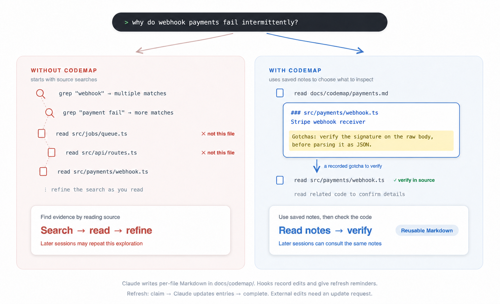

claude-codemap is a Claude Code plugin that saves notes about each source file: its role, key symbols, dependencies, and things to watch out for. Later sessions are instructed to consult these notes before searching the codebase.
Claude reads the source and writes one entry per file, grouped by module in docs/codemap/. An example entry:
### src/payments/webhook.ts — Stripe webhook receiver
- Symbols: handleWebhook, verifySignature, replayGuard
- Depends on: stripe, PaymentStore, AuditLog
- Gotchas: Verify the signature against the raw request body,
before parsing it as JSON.
The notes stay in your project as Markdown. No separate daemon or build step is needed.
Usage
1. Prepare and install
Use the Claude Code terminal CLI with plugin support. The hooks require bash, Git, and jq on PATH. macOS and Linux are the verified platforms; Windows is untested.
If jq is missing, install it in your terminal: brew install jq on macOS, or sudo apt-get install jq on Debian/Ubuntu. Without jq, codemap guidance, edit tracking, and refresh reminders do not work. In projects with a codemap, the hooks report the missing dependency.
In Claude Code, register this repository as a plugin source:
/plugin marketplace add ayeeatelier/claude-codemap
Then install codemap from that source:
/plugin install codemap@claude-codemap
If prompted for a scope, choose User to use it across your projects, Project to share the setting with collaborators, or Local for yourself in this project only. See the Claude Code installation guide for scope and activation details.
2. Create the project's codemap
After installation, start a new Claude Code session in the project you want to index and ask:
Create a codemap for this project.
You can also invoke the skill directly with /codemap:codemap-init.
Claude lists the source files, reads them through parallel scanner agents, and writes the index. The skill instructs Claude to compare the indexed paths against the source list before reporting completion.
Open docs/codemap/README.md to check the module list and update rules. Each module's Markdown file contains the per-file entries. In subsequent sessions, the plugin adds instructions to consult this index. Projects without docs/codemap/ are left alone.
Alternative: install from a local clone
Clone the repository in your terminal:
git clone https://github.com/ayeeatelier/claude-codemap.git
In Claude Code, register the cloned directory instead of the GitHub source above. Replace the example with its absolute path:
/plugin marketplace add /absolute/path/to/claude-codemap
Then run /plugin install codemap@claude-codemap and follow step 2 above. Cloning or installing this plugin does not create an index of your project; that is a separate step.
How it works and when to refresh
The plugin contains three hooks, the codemap-init skill, and a Haiku scanner agent. Hooks record paths and send instructions to Claude; Claude writes the summaries.
| When |
What the plugin does |
| A session starts, resumes, or compacts |
Adds instructions to read the index before broad code searches. |
| Claude edits a source file with Edit or Write |
Records its path in docs/codemap/.stale for a later refresh. |
Claude runs a command containing a recognized git commit through Bash |
If entries are pending, asks Claude to refresh them before reporting the feature complete. This is a reminder after the command, not a Git commit blocker. |
Tracking is limited to Claude's tools. Changes from an external editor, shell scripts, git pull, or file deletions and moves are not automatically recorded. Commits in an ordinary terminal do not trigger the reminder. A failed or intermediate commit can also trigger it; Claude is told to ignore the reminder in those cases.
Before finishing work, or when entries are out of date, ask Claude:
Refresh the pending codemap entries using the plugin's queue tool, then check them against the current source.
The session instructions tell Claude how to claim pending paths and mark them complete after updating the entries. Do not clear .stale or other queue files by hand: edits made during a refresh must remain pending. An interrupted refresh can be recovered through the same queue tool.
For changes made outside Claude, name the changed paths, including deleted or moved files, and ask it to update their entries and the module list. If you do not know the affected paths, ask it to rebuild the project's codemap.
Illustration: source searches and codemap-guided exploration

The left side finds relevant files through source searches. The right side uses saved notes about each file's role, symbols, dependencies, and gotchas to narrow down what to inspect. Both paths still require checking the source. This is an example of the exploration workflow, not a measured performance comparison.
Claude writes the notes as Markdown in docs/codemap/. Hooks record paths changed with Edit or Write and give refresh reminders. To refresh, Claude claims the pending paths, updates their entries, and completes that batch. The hooks do not rewrite summaries themselves. Changes made outside Claude need an explicit update request.
Cost and benefit
Building the index requires reading the selected source files and generating summaries. Ongoing usage includes the session guidance, reading relevant entries, and rewriting entries after changes. All of these consume tokens; the total depends on your project and workflow.
A small development experiment with two questions and three with/without comparisons reported 25–39% fewer tokens with the index. The repository does not include enough data to reproduce those runs or calculate monetary savings or a break-even point. See the measurement notes for the recorded figures and their limits.
Good to know
- Summaries can be wrong or incomplete. They help locate and understand code; check the source before relying on a claim. When the index and source disagree, update the index.
- LSP is optional and installed separately. When available, the guidance prefers it for precise definitions, references, and call hierarchies. See LSP companion setup. codemap itself does not build a call graph.
- Common source extensions are built in. Add other extensions to
docs/codemap/.extensions, one per line without a dot. Vendored directories, build output, and the codemap directory itself are excluded from tracking.
- For small repositories, maintaining the notes may cost more than repeating a search. The init skill is instructed to warn before indexing very small projects and suggest staged generation for large ones; these are heuristics, not measured cutoffs.
Contributing
Bug reports and pull requests are welcome. Please open an issue before a large change. The implementation uses Bash and awk; the scanner and skill instructions are Markdown.
Run the checks from the repository root before submitting a PR:
bash tests/run.sh
shellcheck scripts/*.sh tests/*.sh
CI runs both checks. Changes to the public documentation should stay consistent across the three READMEs and the language sections in docs/index.html.
To inspect the real Claude Code scenario without making model calls, run:
bash tests/live-claude-code.sh --dry-run
After Claude Code is authenticated, run the live validation:
bash tests/live-claude-code.sh --live
The live run loads this checkout with --plugin-dir, creates a disposable two-file project, and checks codemap generation, edit tracking, queue refresh, and the commit reminder. It consumes model tokens. Failed runs preserve the fixture and JSONL logs; pass --keep to preserve a successful run too.
License
MIT
claude-codemap은 소스 파일의 역할·주요 심볼·의존성·주의사항을 마크다운으로 저장하는 Claude Code 플러그인입니다. 이후 세션에서는 코드베이스를 검색하기 전에 이 기록을 참고하도록 Claude에게 안내합니다.
Claude가 소스를 읽고 파일마다 요약을 작성하며, 결과는 모듈별로 묶어 docs/codemap/에 저장합니다. 아래는 파일 하나에 대한 요약 예시입니다.
### src/payments/webhook.ts — Stripe 웹훅 수신부
- Symbols: handleWebhook, verifySignature, replayGuard
- Depends on: stripe, PaymentStore, AuditLog
- Gotchas: 요청 본문을 JSON으로 파싱하기 전에
원본 본문으로 서명을 검증해야 함.
요약은 프로젝트 안에 마크다운 파일로 남습니다. 별도의 데몬이나 빌드 단계는 필요하지 않습니다.
사용방법
1. 준비 및 설치
플러그인을 지원하는 Claude Code 터미널 CLI를 사용합니다. 훅을 실행하려면 bash, Git, jq가 PATH에 있어야 합니다. macOS와 Linux에서 확인했으며, Windows는 미검증입니다.
jq가 없다면 터미널에서 설치합니다. macOS는 brew install jq, Debian/Ubuntu는 sudo apt-get install jq를 실행합니다. jq가 없으면 코드맵 사용 안내·변경 추적·갱신 알림이 동작하지 않으며, 코드맵이 있는 프로젝트에서는 훅이 의존성 누락을 알립니다.
Claude Code에서 이 저장소를 플러그인을 받아올 곳으로 등록합니다.
/plugin marketplace add ayeeatelier/claude-codemap
등록한 곳에서 codemap을 설치합니다.
/plugin install codemap@claude-codemap
설치 범위를 묻는다면 여러 프로젝트에서 혼자 사용할 때는 User, 이 프로젝트의 협업자와 설정을 공유할 때는 Project, 이 프로젝트에서 혼자 사용할 때는 Local을 선택합니다. 범위와 활성화에 관한 자세한 내용은 Claude Code 설치 안내를 참고하세요.
2. 프로젝트 코드맵 생성
설치 후, 코드맵을 만들 프로젝트에서 새 Claude Code 세션을 시작하고 요청합니다.
이 프로젝트 코드맵 만들어 주세요.
/codemap:codemap-init으로 스킬을 직접 실행할 수도 있습니다.
Claude가 소스 파일 목록을 확인하고, 스캐너 에이전트를 병렬로 실행해 소스를 읽은 뒤 인덱스를 작성합니다. 스킬에는 완료를 알리기 전에 요약에 포함된 경로와 소스 파일 목록을 대조하도록 지시가 들어 있습니다.
생성 후 docs/codemap/README.md에서 모듈 목록과 갱신 규칙을 확인하세요. 각 모듈의 마크다운 파일에는 파일별 요약이 들어 있습니다. 이후 세션에는 이 인덱스를 참고하라는 안내가 추가됩니다. docs/codemap/이 없는 프로젝트에는 훅이 아무 작업도 하지 않습니다.
다른 설치 방법: 로컬 클론 사용
터미널에서 저장소를 클론합니다.
git clone https://github.com/ayeeatelier/claude-codemap.git
Claude Code에서 위의 GitHub 등록 명령 대신 클론한 디렉터리를 등록합니다. 예시 경로를 실제 절대 경로로 바꾸세요.
/plugin marketplace add /absolute/path/to/claude-codemap
그다음 /plugin install codemap@claude-codemap을 실행하고, 위의 2단계에 따라 프로젝트 코드맵을 생성합니다. 플러그인을 클론하거나 설치하는 것만으로 프로젝트의 인덱스가 만들어지지는 않습니다.
동작 방식과 갱신
플러그인은 훅 3개, codemap-init 스킬, Haiku 스캐너 에이전트로 구성됩니다. 훅은 경로를 기록하고 Claude에게 지시를 전달하며, 요약을 작성하는 것은 Claude입니다.
| 시점 |
플러그인이 하는 일 |
| 세션 시작·재개·컨텍스트 압축 후 |
광범위한 코드 검색 전에 인덱스를 읽으라는 안내를 추가합니다. |
| Claude가 Edit 또는 Write로 소스 수정 |
나중에 요약을 갱신할 수 있도록 경로를 docs/codemap/.stale에 기록합니다. |
Claude가 Bash로 실행한 명령에서 git commit을 감지 |
갱신 대기 항목이 있으면 기능 완료를 알리기 전에 요약을 갱신하도록 요청합니다. 명령 실행 후의 알림이며, Git 커밋을 차단하지 않습니다. |
변경 추적은 Claude의 도구 사용에 한정됩니다. 외부 편집기, 셸 스크립트, git pull로 인한 변경이나 파일 삭제·이동은 자동으로 기록되지 않습니다. 일반 터미널의 커밋도 알림을 발생시키지 않습니다. 실패한 커밋이나 중간 커밋에도 알림이 나올 수 있으며, 이때는 무시하도록 Claude에게 안내합니다.
작업을 마무리하기 전이나 요약이 오래되었을 때 Claude에게 요청하세요.
플러그인의 큐 도구로 갱신 대기 중인 코드맵 항목을 갱신하고, 현재 소스와 맞는지 확인해 주세요.
세션 안내에는 Claude가 큐에서 처리할 경로를 가져오고, 요약을 갱신한 뒤 완료 처리하는 방법이 포함됩니다. 갱신 중 발생한 변경이 남아 있어야 하므로 .stale 등 큐 파일을 직접 비우지 마세요. 중단된 갱신도 같은 큐 도구로 다시 처리할 수 있습니다.
Claude 밖에서 수정했다면 삭제·이동한 파일을 포함해 변경한 경로를 알려주고, 해당 요약과 모듈 목록을 갱신하도록 요청하세요. 어떤 파일이 바뀌었는지 모른다면 프로젝트 코드맵을 다시 만들어 달라고 요청합니다.
그림으로 보기: 소스 검색과 코드맵을 참고한 탐색
왼쪽은 소스 검색으로 관련 파일을 찾는 예시이고, 오른쪽은 파일별 역할·주요 심볼·의존성·주의점이 담긴 요약을 참고해 확인할 소스를 좁히는 예시입니다. 어느 쪽이든 실제 소스 확인은 필요합니다. 탐색 흐름을 설명하는 그림이며, 성능 측정 결과는 아닙니다.
요약은 Claude가 작성해 docs/codemap/에 Markdown으로 저장합니다. 훅은 Edit·Write로 바뀐 경로를 기록하고 갱신을 알립니다. 갱신할 때 Claude는 claim으로 대기 중인 경로를 가져와 해당 요약을 수정한 뒤, complete로 그 배치를 완료 처리합니다. 훅이 요약을 직접 다시 쓰지는 않습니다. Claude 밖에서 수정한 내용은 별도로 갱신을 요청해야 합니다.
비용과 효과
최초 생성에는 선택한 소스 파일을 읽고 요약을 작성하는 토큰이 필요합니다. 이후에도 세션 안내, 관련 요약 읽기, 변경된 요약의 재작성에 토큰을 사용합니다. 총사용량은 프로젝트와 작업 방식에 따라 달라집니다.
개발 중 수행한 소규모 실험에서는 질문 2개를 대상으로 인덱스 유무를 총 3회 비교했고, 인덱스가 있을 때 토큰이 25~39% 적게 사용되었습니다. 다만 이 저장소에는 같은 실험을 재현하거나 금전적 절감액·손익분기점을 계산하기에 충분한 자료가 없습니다. 기록된 수치와 한계는 측정 메모(영문)를 참고하세요.
알아두면 좋은 것
- 요약에는 오류나 누락이 있을 수 있습니다. 코드의 위치와 역할을 파악하는 데 활용하되, 판단에 필요한 내용은 소스에서 확인하세요. 인덱스와 소스가 다르면 인덱스를 고칩니다.
- LSP는 선택사항이며 별도로 설치합니다. 사용 가능할 때 정확한 정의 위치·참조·호출 계층을 찾는 데 우선 사용하도록 안내합니다. LSP 설정 안내(영문)를 참고하세요. codemap 자체는 호출 그래프를 만들지 않습니다.
- 주요 소스 확장자는 기본 지원합니다. 다른 확장자는
docs/codemap/.extensions에 점 없이 한 줄에 하나씩 추가하세요. 벤더 디렉터리, 빌드 결과물, 코드맵 디렉터리 자체는 추적에서 제외됩니다.
- 작은 저장소에서는 요약 유지 비용이 반복 검색 비용보다 클 수 있습니다. 초기화 스킬은 아주 작은 프로젝트에서는 먼저 경고하고, 큰 프로젝트에서는 단계별 생성을 제안하도록 되어 있습니다. 이는 실측으로 정한 기준이 아닌 경험칙입니다.
기여
버그 리포트와 PR을 환영합니다. 큰 변경은 이슈로 먼저 논의해 주세요. 구현에는 Bash와 awk를 사용하며, 스캐너와 스킬 지시문은 마크다운입니다.
PR을 보내기 전에 저장소 루트에서 다음 검증을 실행하세요.
bash tests/run.sh
shellcheck scripts/*.sh tests/*.sh
CI에서도 두 검증을 실행합니다. 공개 문서를 수정할 때는 README 3개 언어판과 docs/index.html의 각 언어 섹션에 같은 내용을 반영해 주세요.
모델을 호출하지 않고 실제 Claude Code 검증 시나리오를 확인하려면 다음 명령을 실행합니다.
bash tests/live-claude-code.sh --dry-run
Claude Code 인증을 마친 뒤 라이브 검증을 실행합니다.
bash tests/live-claude-code.sh --live
라이브 검증은 --plugin-dir로 현재 체크아웃을 불러오고, 소스 파일 2개가 있는 일회용 프로젝트에서 코드맵 생성·수정 감지·큐 갱신·커밋 알림을 확인합니다. 모델 토큰을 사용합니다. 실패한 실행은 fixture와 JSONL 로그를 보존하며, 성공한 실행도 남기려면 --keep을 사용하세요.
라이선스
MIT
claude-codemap は、ソースファイルの役割・主要なシンボル・依存関係・注意点をマークダウンに保存する Claude Code プラグインです。以後のセッションでは、コードベースを検索する前にこの記録を参照するよう Claude に案内します。
Claude がソースを読み、ファイルごとに要約を作成し、モジュール別にまとめて docs/codemap/ に保存します。以下は 1 ファイル分の要約例です。
### src/payments/webhook.ts — Stripe Webhook 受信部
- Symbols: handleWebhook, verifySignature, replayGuard
- Depends on: stripe, PaymentStore, AuditLog
- Gotchas: リクエスト本文を JSON としてパースする前に、
元の本文で署名を検証する必要があります。
要約はプロジェクト内にマークダウンファイルとして残ります。別途のデーモンやビルド工程は不要です。
使い方
1. 準備とインストール
プラグインに対応した Claude Code のターミナル CLI を使います。フックの実行には bash、Git、jq が PATH 上に必要です。macOS と Linux で確認しており、Windows は未検証です。
jq がない場合は、ターミナルでインストールします。macOS では brew install jq、Debian/Ubuntu では sudo apt-get install jq を実行します。jq がないと、コードマップの利用案内・変更追跡・更新通知は動作しません。コードマップがあるプロジェクトでは、フックが依存ツールの不足を通知します。
Claude Code で、このリポジトリをプラグインの入手元として登録します。
/plugin marketplace add ayeeatelier/claude-codemap
登録した入手元から codemap をインストールします。
/plugin install codemap@claude-codemap
インストール範囲を尋ねられた場合、複数のプロジェクトで自分だけが使うなら User、このプロジェクトの共同作業者と設定を共有するなら Project、このプロジェクトで自分だけが使うなら Local を選びます。範囲と有効化の詳細は Claude Code のインストール案内を参照してください。
2. プロジェクトのコードマップを作成
インストール後、対象のプロジェクトで新しい Claude Code セッションを開始し、依頼します。
このプロジェクトのコードマップを作ってください。
/codemap:codemap-init でスキルを直接実行することもできます。
Claude がソースファイルを列挙し、スキャナーエージェントを並列実行してソースを読み、インデックスを作成します。スキルには、完了を報告する前に要約内のパスとソースファイル一覧を照合する指示が含まれています。
作成後は docs/codemap/README.md でモジュール一覧と更新ルールを確認してください。各モジュールのマークダウンファイルには、ファイルごとの要約が入ります。以後のセッションでは、このインデックスを参照する案内が追加されます。docs/codemap/ のないプロジェクトではフックは何もしません。
別のインストール方法：ローカルクローンを使う
ターミナルでリポジトリをクローンします。
git clone https://github.com/ayeeatelier/claude-codemap.git
Claude Code で、上記の GitHub 登録コマンドの代わりにクローンしたディレクトリを登録します。例のパスを実際の絶対パスに置き換えてください。
/plugin marketplace add /absolute/path/to/claude-codemap
次に /plugin install codemap@claude-codemap を実行し、上の手順 2 に従ってプロジェクトのコードマップを作成します。プラグインのクローンやインストールだけでは、プロジェクトのインデックスは作成されません。
動作と更新
プラグインは 3 つのフック、codemap-init スキル、Haiku スキャナーエージェントで構成されます。フックがパスを記録して Claude に指示を渡し、Claude が要約を書きます。
| タイミング |
プラグインの動作 |
| セッション開始・再開・コンテキスト圧縮後 |
広範なコード検索の前にインデックスを読むよう案内します。 |
| Claude が Edit または Write でソースを編集 |
後で要約を更新できるよう、パスを docs/codemap/.stale に記録します。 |
Claude が Bash で実行したコマンドから git commit を検出 |
更新待ちの項目があれば、機能の完了を報告する前に要約を更新するよう依頼します。コマンド実行後の通知であり、Git コミットを阻止するものではありません。 |
変更追跡は Claude のツール利用に限られます。 外部エディタ、シェルスクリプト、git pull による変更やファイルの削除・移動は自動記録されません。通常のターミナルからのコミットも通知の対象外です。失敗したコミットや中間コミットで通知される場合もありますが、その場合は無視するよう Claude に案内します。
作業を終える前や要約が古くなったときに、Claude に依頼してください。
プラグインのキューツールで更新待ちのコードマップ項目を更新し、現在のソースと一致するか確認してください。
セッションの案内には、Claude がキューから処理対象のパスを取得し、要約を更新してから完了扱いにする手順が含まれています。更新中に発生した変更を残す必要があるため、.stale などのキューファイルを手動で空にしないでください。中断した更新も、同じキューツールで再開できます。
Claude の外で編集した場合は、削除・移動したファイルも含めて変更したパスを伝え、該当する要約とモジュール一覧の更新を依頼してください。対象のパスが分からない場合は、プロジェクトのコードマップを作り直すよう依頼します。
図解：ソース検索とコードマップを使った探索
左側はソース検索で関連ファイルを探す例です。右側は、各ファイルの役割・主要なシンボル・依存関係・注意点をまとめた要約を使い、確認するソースを絞り込む例です。どちらも実際のソースを確認する必要があります。探索の流れを示す図であり、性能の測定結果ではありません。
要約は Claude が書き、docs/codemap/ に Markdown で保存します。フックは Edit・Write で変更されたパスを記録し、更新を促します。更新時には、Claude が claim で対象のパスを取得し、要約を修正してから complete でそのバッチを完了扱いにします。フック自体が要約を書き直すわけではありません。Claude の外で変更した内容は、別途更新を依頼する必要があります。
コストと効果
初回の作成では、対象のソースファイルを読み、要約を書くためにトークンを使います。その後も、セッションの案内、関連する要約の読み取り、変更された要約の書き直しにトークンが必要です。総使用量はプロジェクトと作業方法によって変わります。
開発中の小規模な実験では、2 種類の質問についてインデックスの有無を計 3 回比較し、インデックスありで 25〜39% 少ないトークン使用量が記録されました。ただし、このリポジトリには実験の再現や金銭的な節約額・損益分岐点の算出に十分な資料はありません。記録された数値と制約は測定メモ（英語）を参照してください。
知っておくとよいこと
- 要約には誤りや抜けがあり得ます。コードの場所や役割を把握するために使い、判断に必要な内容はソースで確認してください。インデックスとソースが食い違う場合はインデックスを修正します。
- LSP は任意で、別途インストールします。利用可能な場合は、正確な定義位置・参照・呼び出し階層の確認に優先して使うよう案内します。LSP 設定ガイド（英語）を参照してください。codemap 自体は呼び出しグラフを作りません。
- 主要なソース拡張子は組み込み済みです。ほかの拡張子は
docs/codemap/.extensions に、ドットなしで 1 行に 1 つ追加してください。ベンダーディレクトリ、ビルド出力、コードマップのディレクトリ自体は追跡から除外されます。
- 小さなリポジトリでは、要約の維持が検索の繰り返しより高くつく場合があります。初期化スキルは、非常に小さなプロジェクトでは事前に警告し、大きなものでは段階的な作成を提案するよう指示されています。これは実測による境界ではなく、経験則です。
コントリビュート
バグ報告とプルリクエストを歓迎します。大きな変更は、まず Issue で相談してください。実装には Bash と awk を使い、スキャナーとスキルの指示はマークダウンで記述しています。
PR を送る前に、リポジトリのルートで以下のチェックを実行してください。
bash tests/run.sh
shellcheck scripts/*.sh tests/*.sh
CI でも両方を実行します。公開ドキュメントを変更する際は、3 言語の README と docs/index.html の各言語セクションで内容を揃えてください。
モデルを呼び出さずに実際の Claude Code 検証シナリオを確認するには、次を実行します。
bash tests/live-claude-code.sh --dry-run
Claude Code の認証後、ライブ検証を実行します。
bash tests/live-claude-code.sh --live
ライブ検証は --plugin-dir で現在のチェックアウトを読み込み、2 つのソースファイルを持つ一時プロジェクトで、コードマップ生成・編集検知・キュー更新・コミット通知を確認します。モデルのトークンを使用します。失敗した実行では fixture と JSONL ログが保存され、成功した実行も残す場合は --keep を指定します。
ライセンス
MIT